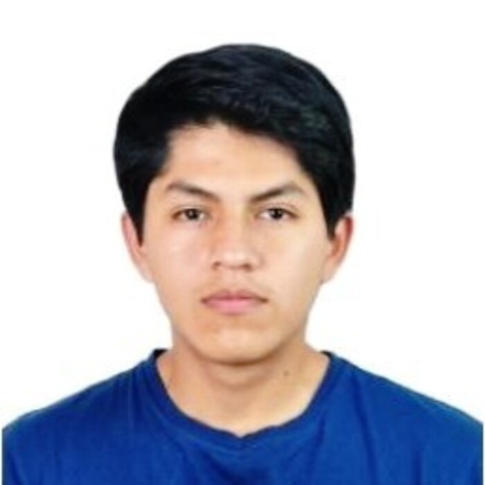

|
Fidel Tito I'm a Bachelor in Mechatronics Engineering at Universidad Nacional de Ingenieria in Lima. Currently, I work as a Machine Learning Engineer at Intercorp, where I specialize in deploying models into production . |
 |
ProjectsI'm interested in the areas of Software, Deep Learning, Computer Vision, Reinforcement Learning, ML Operations, and Image Processing. Additionally, I have experienced working in projects related to pose estimation, image segmentation, deep reinforcement learning, image alignment, control, and signal processing . |

|
Medical Image Alignment with Deep Learning
Worked in Neuromatch Academy, Lima, Aug 2021 The research aimed to apply transformations over a MRI dataset with visual deformations. I employed a deep learning model based on VoxelMorph to successfully reduce variance between subjects by applying non-rigid transformations on 3D images. |

|
CamP: Camera Preconditioning for Neural Radiance Fields
Keunhong Park, Philipp Henzler, Ben Mildenhall, Jonathan T. Barron, Ricardo Martin-Brualla SIGGRAPH Asia, 2023 project page / arXiv Preconditioning based on camera parameterization helps NeRF and camera extrinsics/intrinsics optimize better together. |

|
DreamBooth3D: Subject-Driven Text-to-3D Generation
Amit Raj, Srinivas Kaza, Ben Poole, Michael Niemeyer, Nataniel Ruiz, Ben Mildenhall, Shiran Zada, Kfir Aberman, Michael Rubinstein, Jonathan T. Barron, Yuanzhen Li, Varun Jampani ICCV, 2023 project page / arXiv Combining DreamBooth (personalized text-to-image) and DreamFusion (text-to-3D) yields high-quality, subject-specific 3D assets with text-driven modifications |

|
BakedSDF: Meshing Neural SDFs for Real-Time View Synthesis
Lior Yariv*, Peter Hedman*, Christian Reiser, Dor Verbin, Pratul Srinivasan, Richard Szeliski, Jonathan T. Barron, Ben Mildenhall SIGGRAPH, 2023 project page / video / arXiv We use SDFs to bake a NeRF-like model into a high quality mesh and do real-time view synthesis. |

|
MERF: Memory-Efficient Radiance Fields for Real-time View Synthesis in Unbounded Scenes
Christian Reiser, Richard Szeliski, Dor Verbin, Pratul Srinivasan, Ben Mildenhall, Andreas Geiger, Jonathan T. Barron, Peter Hedman SIGGRAPH, 2023 project page / video / arXiv We use volumetric rendering with a sparse 3D feature grid and 2D feature planes to do real-time view synthesis. |
Miscellanea |


{kind=link}
|
Feel free to steal this website's source code. Do not scrape the HTML from this page itself, as it includes analytics tags that you do not want on your own website — use the github code instead. Also, consider using Leonid Keselman's Jekyll fork of this page. |